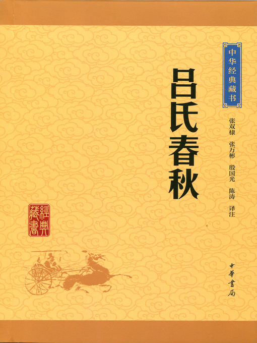

吕氏春秋•孟春纪第一贵公
吕氏春秋•孟春纪第一贵公#

【原文】：
四曰：昔先圣王之治天下也，必先公。公则天下平矣。平得於公。尝试观於上志，有得天下者众矣，其得之以公，其失之必以偏。凡主之立也，生於公。故《鸿范》[2]曰：“无偏无党，王道荡荡[3]。无偏无颇，遵王之义。无或作好，遵王之道。无或作恶，遵王之路。”天下，非一人之天下也，天下之天下也。阴阳之和，不长一类；甘露时雨，不私一物；万民之主，不阿[4]一人。伯禽[5]将行，请所以治鲁。周公曰：“利而勿利也。”荆人有遗弓者，而不肯索，曰：“荆人遗之，荆[6]人得之，又何索焉？”孔子闻之曰：“去其‘荆’而可矣。”老聃闻之曰：“去其‘人’而可矣。”故老聃则至公矣。天地大矣，生而弗子，成而弗有，万物皆被其泽，得其利，而莫知其所由始。此三皇五帝之德也。管仲有病，桓公往问之，曰：“仲父之病矣。渍甚，国人弗讳，寡人将谁属国？”管仲对曰：“昔者臣尽力竭智，犹未足以知之也。今病在於朝夕之中，臣奚能言？”桓公曰：“此大事也，愿仲父之教寡人也。”管仲敬诺，曰：“公谁欲相？”公曰：“鲍叔牙可乎？”管仲对曰：“不可。夷吾善鲍叔牙。鲍叔牙之为人也，清廉洁直；视不己若者，不比於人；一闻人之过，终身不忘。勿已，则隰朋其可乎？隰朋之为人也，上志而下求，丑不若黄帝，而哀不己若者。其於国也，有不闻也；其於物也，有不知也；其於人也，有不见也。勿已乎，则隰朋可也。”夫相，大官也。处大官者，不欲小察，不欲小智，故曰：大匠不斫，大庖不豆，大勇不斗，大兵不寇。桓公行公去私恶，用管子而为五伯长；行私阿所爱，用竖刀而虫出於户。人之少也愚，其长也智。故智而用私，不若愚而用公。日醉而饰服，私利而立公，贪戾而求王，舜弗能为——
[1]贵公：即贵在公正。
[2]《鸿范》：《尚书》中的一篇。
[3]荡荡：平坦的样子。
[4]阿：偏私。
[5]伯禽：周公的儿子。
[6]荆：楚国的别称。
【译文】：
从前，先代圣主治理天下，一定把公正无私放在首位。做到公正无私，天下就安定了。天下获得安定是由于公正无私。试考察一下古代的记载，曾经取得天下的人是相当多的了。如果说他们取得天下是由于公正无私，那么他们丧失天下必定是由于偏颇有私。大凡立君的本意，都是出于公正无私。所以《鸿范》中说；“不要偏私，不要结党，王道多么乎坦宽广。不要偏私，不要倾侧，遵循先王的法则。不要滥逞个人偏好，遵循先王的正道。不要滥逞个人怨怒，遵循先王的正路。”
天下不是某一个人的天下，而是天下人的天下。阴阳相和，不只生长一种物类。甘露时雨，不偏私一物。万民之主，不偏粗一人。伯禽将去鲁国，临行前请示治理鲁国的方法。周公说。“施利给人民而不要谋取私利。”有个荆人丢了弓，却不肯去寻找，他说，“荆人丢了它，反正还被荆人得到，又何必寻找呢?”孔子听到选件事，说；他的话中去掉那个‘荆’字就合适了。”老聃听到以后说：“再去掉那个‘人’字就合适了。”象老聃选样的人，算是达到公的最高境界了。
天地是多么伟大啊，生育人民而不把他们作为自己的子孙，成就万物而不占为己有。万物都承受它的恩泽，得到它的好处，然而却没有哪一个知道这些是从哪里来的。这也正是三皇五帝的品德。
管仲有病，桓公去探问他，说；“您的病相当重了。如果您病情危急，不幸与世长辞，我将把国家托付给谁呢?”管仲回答说。“过去我尽心竭力，尚且不足以了解这样的人。如今病重，危在旦夕，又怎么能谈论这件事呢?”桓公说；“这是大事啊，望您能教导我。”管仲恭敬地答应了，说：您想用谁为相?”桓公说：“鲍教牙：行吗?”管仲回答说：“不行。我深知鲍叔牙：鲍叔牙的为人，清白廉正，看待不如自己的人，不屑与之为伍，假一闻知别人的过失，便终生不忘，不得已的话，隰朋大概还行吧?隰朋的为人，既能记识上世贤人而披效他们，又能不耻下问。自愧其德不如黄帝，又怜惜不如自己的人。他对于国政，不该管的，就不去打听；他对于事务，不需要了解的，就不去过问，他对于别人，无关大节的，就装作没看见。不得已的话，那么隰朋还行。”
相，是一种很高的职位。居于高位的人，不应该在小的地方花费精力，不应该玩弄小聪明。所以说，手艺高超的木匠不去亲自动手砍削，高超的厨师不去亲自排列食嚣，大勇之人不去亲自格斗厮杀，正义之师不去劫掠为害。桓公行公正，抛却私恨，起用管子而成为五霸之长，行偏私，庇护所爱，任用竖刀而致使死后国家大乱，不得殡殓，尸虫流出门外。
人年轻的时候愚昧，岁数大了聪明。如果聪明而用私，不如愚昧而行公。天天醉醺醺的却要整饬丧纪，自私自利却要树立公正，贪婪残暴却要称王天下，即使舜也办不到。